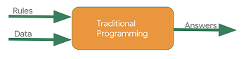
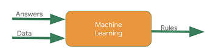
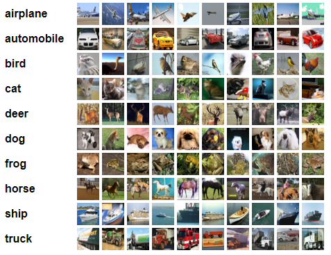
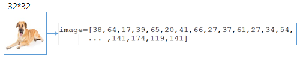
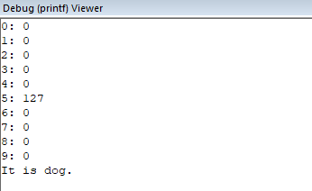
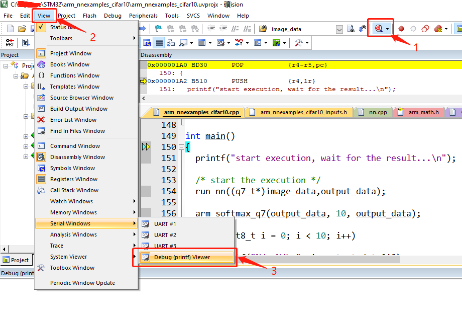
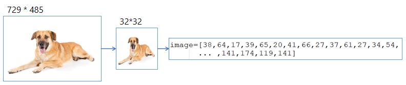

STM32图像分类#
1.前言#
嵌入式机器学习(EmbeddedML)是一个很大的话题，涉及到的技术很多：
- 嵌入式软硬件技术：ARM、C/C++、Linux、Android等
- 图像处理：数字图像理论、OpenCV等
- 机器学习理论：高数、线代、CNN、激活函数、损失函数、梯度下降等
- 机器学习框架：TensorFlow、Caffe等
- Python
不是一两篇文章就能表述清楚的，所以我们决定做一个嵌入式机器学习(EmbeddedML)专栏，通过一系列的文章和视频，带你走进这个新奇的世界！
亲自动手尝试，是了解一个新事物最好的方式。我们为你准备了一个实际可运行的项目，不需要开发板，只要你有一台电脑就能运行。下面开始！
2.机器学习技术简介#
机器学习可以认为是一种新的编程方式，一种让机器能够具有学习能力的编程方式。
我们来看看传统的编程方式与机器学习这种编程方式有何不同：

传统的编程方式是：使用规则（由程序要编写）和数据生成结果。

机器学习：与传统的编程方式相反，我们输入的是结果和数据，得到的是规则，这个规则是通过机器学习技术得到的，而不是由程序员编写的。
2.1 为什么要使用机器学习技术呢？#
在某些应用场景中，使用机器学习技术的好处是显而易见的。对于计算机来说，实际生活中的很多应用场景都非常的复杂，比如分辨猫和狗，大多数时候，我们无法事先编写一套规则让计算机分辨出哪个是猫哪个是狗，此时机器学习技术的优越性就显现出来了，我们使用大量已标记的猫狗图片，去训练深度网络，得到一个识别猫狗的规则，计算机利用这个规则就能识别猫和狗了。
2.2 机器学习的过程#
机器学习应用一般分为两个过程：
- 一是模型的训练，这个过程需要大量的数据和计算量，一般在计算能力很强的计算机上进行
- 二是使用训练所得的模型对输入进行预测，这个过程计算量相对就会小很多，可以在手机上，甚至是在MCU上进行
3. 在STM32上进行图像分类试验#
这里仅介绍如何在STM32上运行机器学习模型，从而对输入图像的类别进行预测。至于模型的网络搭建、训练和转换将在后续文章中介绍。
项目地址：https://github.com/edgeML/cifar10_image_classifier_on_stm32
3.1 项目简介#
本项目实现了在STM32上进行图像分类的任务。使用CIFAR-10数据集，通过Caffe机器学习框架搭建和训练神经网络模型，然后将所得模型进行转换，使其能够运行在STM32上。本项目运行在Keil的模拟器中，所以无需开发板即可体验机器学习在STM32上的应用效果。
3.2 CIFAR-10数据集介绍#
CIFAR-10数据集由10类32x32的彩色图片组成，一共包含60000张图片，每一类包含6000图片。其中50000张图片作为训练集，10000张图片作为测试集。
有了CIFAR-10数据集我们就不用自己到处去收集照片了，可以直接开始训练模型，然后使用模型。
CIFAR-10数据集官网：https://www.cs.toronto.edu/~kriz/cifar.html

3.3 项目的输入#

一幅宽32像素高32像素的彩色图像，为方便STM32实验操作，事先将图像转换为像素值数组，存放在arm_nnexamples_cifar10_inputs.h中。
3.4 项目的输出#
输出是测试图像所属的类别的概率，概率值最大的就是目标图像的所属类别，输出结果如下图所示：

细心的同学可能要问了，为什么这里的输出是127，而不是一个0~1之间的数？
这个跟我们使用的Softmax函数有关，一般Softmax函数的公式是这样的：
y_i = e^(x_i) / sum(e^x_j)
而在STM32上我们采用的是以2为底Softmax函数，所以其输出会有所不同。
y_i = 2^(x_i) / sum(2^x_j)
众所周知，微控制器的计算性能有限，这样做可以大大减小计算量，并且从数学上来讲梯度是一样的，我们依然能够很好地分辨出目标图像的所属类别。
3.5 使用说明：#
编译 -> Debug调试运行 -> 打开Debug (printf) Viewer (View->Serial Windows->Debug (printf) Viewer)

4. 使用来自物联网的图片进行测试#
首先在互联网下载图片，然后使用脚本对图片尺寸调整为32x32，然后再将32x32图片转换成一维数组供STM32使用。大概过程如下所示：

图片处理的脚本可在本项目Github仓库获取，项目地址：https://github.com/edgeML/cifar10_image_classifier_on_stm32
5. 相关链接#
- https://mp.weixin.qq.com/s/KUaZlZa6GuHJkKwhGmzczw
- https://github.com/BVLC/caffe
- https://github.com/ARM-software/ML-examples/tree/master/cmsisnn-cifar10
- https://github.com/ARM-software/CMSIS_5/tree/develop/CMSIS/NN/Examples/ARM/arm_nn_examples/cifar10
- 项目地址：https://github.com/EdgeAI-Lab/cifar10_image_classifier_on_stm32